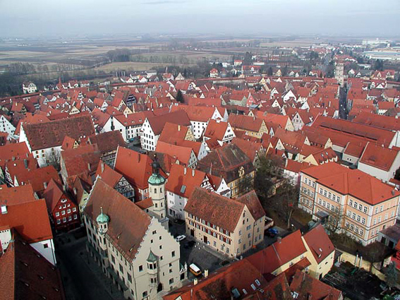

¿Conoces la curiosa ciudad alemana de nördlingen?
Nördlingen es una ciudad situada en el estado alemán de Baviera a unos 145 Km de Munich. Una bonita ciudad de aire medieval, murallas y con una iglesia gótica. A pesar de que esto ya le hace merecedora de una visita, no es lo que le hace especial. ¿Conoce la curiosa ciudad alemana de Nördlingen?
Hace 15 millones de años cayó un meteorito creando un cráter de 25 kilómetros de diámetro. El impacto generó tal energía que sometió al lecho rocoso a una temperatura y presión tan grande que las burbujas de carbono de su interior se convirtieron en diamantes. Millones de diamantes aprisionados entre las rocas del lugar. Lo único, que son diamantes muy pequeños, casi imperceptibles al ojo humano, de menos de 0,2 mm. Todas estas rocas fueron utilizadas para la construcción de las casas del pueblo original, así como para la construcción de la iglesia, así que este hecho hacen de Nördlingen una curiosa ciudad sin igual en el mundo, con todas sus paredes llenas de piedras preciosas. Digo yo, que gracias a Dios los diamantes son tan pequeños que casi no tienen valor, porque seguramente, la ciudad hubiera sido arrasada a lo largo de los años.
Durante muchos años se pensó que la ciudad estaba construida sobre el cráter de un volcán, pero luego los expertos descubrieron que el agujero fue el resultado del impacto de un meteorito. Una ciudad que se convirtió en especial hace millones de años cuando se produjo el brutal impacto del meteorito. Y ahora ya ¿Conoces la curiosa ciudad alemana de Nördlingen?